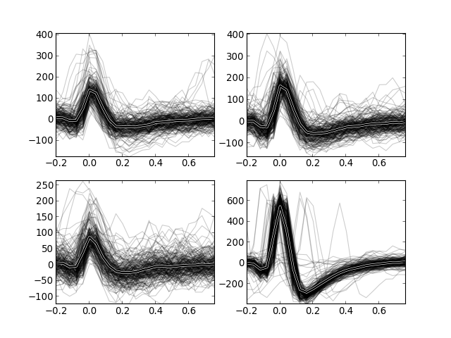
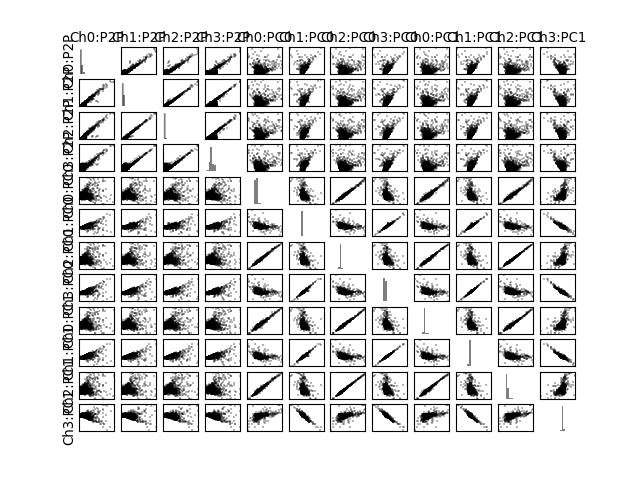
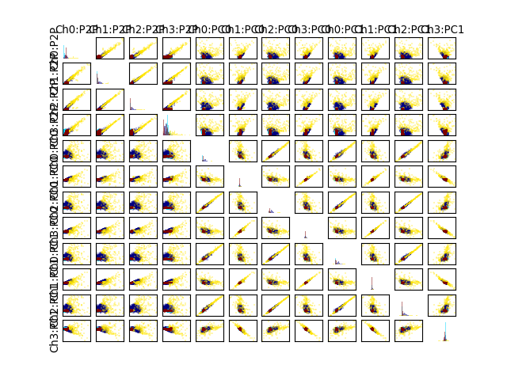
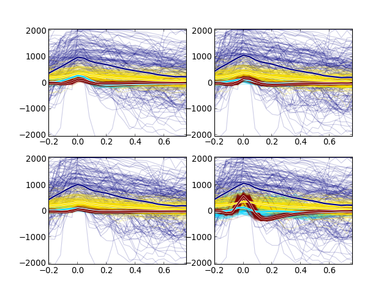

Using low-level interface¶
In this tutorial we will go deeper into the lower-level interface of SpikeSort: spike_sort.core. This interface is a bit more complex than the SpikeBeans (see Interactive spike sorting), but it offers more flexibility and allows you to embbedd SpikeSort in your own programs.
To start this tutorial you will need:
- working installation of SpikeSort
- the sample Tutorial data
1. Read data¶
We will assume that you downloaded the sample data file tutorial.h5 and saved it to the data directory.
You can load this file using one of I/O fiters from spike_sort.io.filter module:
>>> from spike_sort.io.filters import PyTablesFilter >>> dataset = '/SubjectA/session01/el1' >>> io_filter = PyTablesFilter('data/tutorial.h5') >>> raw = io_filter.read_sp(dataset)raw is a dictionary which contains the raw data (in this case it is a pytables compressed array) under data key:
>>> print raw['data'] /SubjectA/session01/el1/raw (CArray(4, 23512500)) ''The size of the data is 23512500 samples in 4 independent channels (contacts in the tetrode).
Note
HDF5 are organised hierarchically and may contain multiple datasets. You can access the datasets via simple paths - in this case /SubjectA/session01/el1 which means dataset of SubjectA recorded in session01 from el1
2. Detect spikes¶
The first step of spike sorting is spike detection. It is usually done by thresholding the raw recordings. Let us use an automatic threshold on 4th contact i.e. index 3 (channel indexing always starts with 0!):
>>> from spike_sort import extract >>> spt = extract.detect_spikes(raw, contact=3, thresh='auto')Let us see now how many events were detected:
>>> print len(spt['data']) 16293We should make sure that all events are aligned to the same point of reference, for example, the maximum amplitude. To this end we first define a window around which spikes should be centered and then recalculate aligned event times:
>>> sp_win = [-0.2, 0.8] >>> spt = extract.align_spikes(raw, spt, sp_win, type="max", ... resample=10)resample is optional - it enables upsampling (in this case 10-fold) of the original waveforms to obtain better resolution of event times.
After spike detection and alignment we can finally extract the spike waveforms:
>>> sp_waves = extract.extract_spikes(raw, spt, sp_win)The resulting structure is a dictionary whose data key is an array containing the spike waveshapes. Note that the array is three-dimensional and sizes of its dimensions reflect:
- 1st dimmension: number of samples in each waveform,
- 2nd: number of spikes,
- 3rd: number of contacts
>>> print sp_waves['data'].shape (25, 15537, 4)In practice, you do not to take care of such details. However, it is always a good idea to take a look at the obtained waveforms. spike_sort.ui.plotting module contains various functions which will help you to visualize the data. To plot waveshapes you can use plot_spikes() function from this module:
>>> from spike_sort.ui import plotting >>> plotting.plot_spikes(sp_waves, n_spikes=200)(Source code, png, hires.png, pdf)
It is apparent from the plot that the spike waveforms of a few different cells and also some artifacts were detected. In order to separate these activities, in the next step we will perform spike clustering.
{kind=link}
{kind=link}
3. Calculate features¶
Before we can cluster spikes, we should calculate some characteristic features that may be used to differentiate between the waveshapes. Module features defines several of such features, for example peak-to-peak amplitude (fetP2P()) and projections on principal components (fetPCs()). Now, we will calculate peak-to-peak amplitudes and PC projections on each of the contact, and then combine them into a single object:
>>> from spike_sort import features >>> sp_feats = features.combine( ... ( ... features.fetP2P(sp_waves), ... features.fetPCs(sp_waves) ... ) ... )To help the user identify the features, abbreviated labels are assigned to all features:
>>> print sp_feats['names'] ['Ch0:P2P' 'Ch1:P2P' 'Ch2:P2P' 'Ch3:P2P' 'Ch0:PC0' 'Ch1:PC0' 'Ch2:PC0' 'Ch3:PC0' 'Ch0:PC1' 'Ch1:PC1' 'Ch2:PC1' 'Ch3:PC1']For examples feature Ch0:P2P denotes peak-to-peak amplitude in contact (channel) 0.
Let us plot the two-dimensional projections of the feature space and histograms of features:
>>> plotting.plot_features(sp_feats)(Source code, png, hires.png, pdf)

{kind=link}
{kind=link}
4. Cluster spikes¶
Finally, based on the calculated features we can perform spike clustering. This step is a little bit more complex and the best settings have to be identified using trial-and-error procedure.
There are several automatic, semi-automatic and manual methods for clustering. They performance and accuracy depends to large degree on a particular dataset and recording setup. In SpikeSort you can choose from several available methods, whose names are given as the first argument of cluster() method.
We will start with an automatic clustering gmm() , which requires only the feature object sp_feats and number of clusters to identify. It attempts to find a mixture of gaussian distributions which approximates best the distribution of spike features (gaussian mixture model). Since we do not know, how many cells were picked up by the electrode we guess an initial number of clusters, which we can modify later on:
>>> from spike_sort import cluster >>> clust_idx = cluster.cluster("gmm",sp_feats,4)The resulting data is just assigning a number (cluster index) to each spike from the feature array sp_feats.
You can use the plotting module to draw the feature vectors with color reflecting groups to which each spike was assigned:
>>> plotting.plot_features(sp_feats, clust_idx)(Source code, png, hires.png, pdf)
or you can see the spike waveshapes:
>>> plotting.plot_spikes(sp_waves, clust_idx, n_spikes=200) >>> plotting.show()(Source code, png, hires.png, pdf)
If you are not satisfied with the results or you think you might do better, you can also try manual sorting using cluster cutting method:
>>> from spike_sort.ui import manual_sort >>> cluster_idx = manual_sort.show(features, sp_waves, ... ['Ch0:P2P','Ch3:P2P'], ... show_spikes=True)This function will open a window in which you can draw clusters of arbitrary shapes, but beware: you can draw only on two dimensional plane so that you are limited to only two features (Ch0:P2P and Ch3:P2P in this case)!
{kind=link}
{kind=link}
{kind=link}
{kind=link}
5. Export data¶
Once you are done with spike sorting, you can export the results to a file. To this end you can use the same filters module we used for reading. Here, we will save the spike times of a selected cell back to the file we read the data from.
First, we need to extract the spike times of the discriminated cells:
>>> spt_clust = cluster.split_cells(spt, clust_idx)It will create a dictionary whose keys are the cell labels pointing to spike times of the specific cell. For example, to extract spike times of cell 0:
>>> print spt_clust[0] {'data': array([ 5.68152000e+02, 1.56978000e+03, 2.23985200e+03, ... 9.24276876e+05, 9.33539168e+05])}Then we may export them to the datafile:
>>> from spike_sort.io import export >>> cell_template = dataset + '/cell{cell_id}' >>> export.export_cells(io_filter, cell_template, spt_clust, overwrite=True)This will create a new node in tutorial.h5 containing spike times of the discriminated cell /SubjectA/session01/el1/cell{1-4}, which you can use for further analysis.
Do not forget to close the I/O filter at the end of your analysis:
>>> io_filter.close()Good luck!!!
Table Of Contents
Related Topics
- Documentation overview
- Tutorials
- Previous: Interactive spike sorting
- Next: Data Structures
- Tutorials